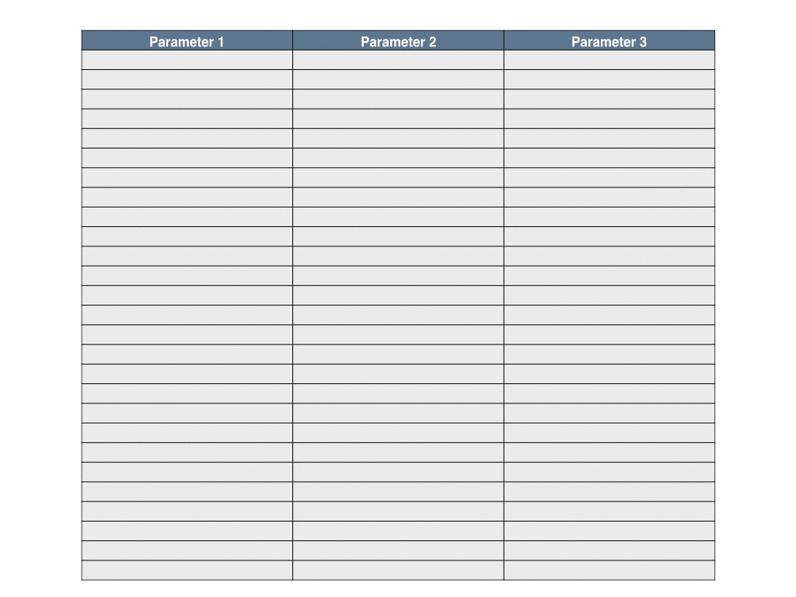
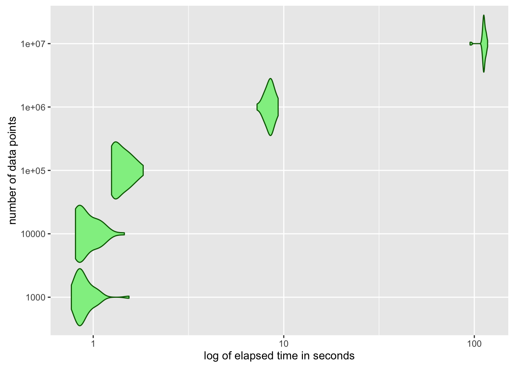

Sensitivity analysis aims to get insight into the effect of input parameter variations on model output (for details see Wikipedia; for an overview see also the paper of Thiele et al.). Latin Hypercube Sampling is an approach to sensitivity analysis (see Wikipedia) to sample parameter values in a efficient way by dividing the multi-dimensional parameter space into strata, which contain the same number of parameter combinations. This approach is especially useful, if we have to deal with a large amount of discrete data and only limited or no knowledge about the multivariate distribution of input parameters and dependencies between them. One may want to run statistical tests to gain that knowledge. Another straightforward approach is to slice the data at hand directly into strata. Then, out of each stratum one single parameter point can be chosen randomly to perform the next steps of sensitivity analysis.
The presented approach is useful, if you have a model to analyze and
a large amount of discrete data on input parameters, i.e. parameter points,
insufficient knowledge about distribution and/or dependencies of the multivariate input parameters,
and if you want to sample points in parameter space to perform a sensitivity analysis.
To give an example we generate a data_frame original.data containing four dependent parameters var1, …, var4.
library(dplyr)
len <- 1e+4
dist1 <- runif(len, min = 1, max = 5)
dist2 <- rnorm(len, mean = 0, sd = 3)
dist3 <- rnorm(len, mean = 4, sd = 1)
dist4 <- rlnorm(len, meanlog = 0, sdlog = 0.5)
l <- list("var1" = dist1 * dist3,
"var2" = dist2,
"var3" = dist3 * dist2,
"var4" = dist4 * dist3 + dist2)
original.data <- as_data_frame(l)The Shiny app below allows you to choose the number of strata, which will be the same for all four parameters. The stratification of the first two parameters is shown in the upper plot, stratification of the third and fourth parameter is shown in the lower plot.
Double-click inside one of the strata in the upper plot to see which subset of parameters tree and four belongs to the selected stratum.
In the following R-code is shown, which performs that stratification efficiently. The code uses mainly dyplr and related packages for data preparation, ggplot2 for plotting and and shiny for interactivity.
The basic idea for the stratification is to proceed parameter-wise:
Take the first parameter i.e. the first column of the data_frame passed to the function.
Slice that parameter into equally sized strata.
Recursively call this function for the remaining parameters in each stratum.
The animated gif illustrates this algorithm for three parameters and three strata per parameter, i.e. \(3^3 = 27\) strata in total:  You can see that first parameter 1 is stratified then the first part of parameter 2, then the first part of parameter 3, than parameter 2 again and so on. The code for this function reads as follows.
rm(list = ls())
library(dplyr)
library(tidyr)
library(tibble)
library(lazyeval)
# Recursive function to calculate strata.
# Parameters:
# dta: data_frame with any number of parameters each
# column is exspected to represent one parameter
# numb.strat: number of strata in each dimension
stratify <- function(dta, numb.strat=4) {
parameters <- names(dta) # get the names of parameters,
param <- parameters[1] # store the name of the first,
n <- dta %>% # claculate the number of values
summarise(n()) # (repetitions included),
n <- n$`n()` # calculate the number of
s <- floor(n / numb.strat) # parameter values per stratum,
if (!is.integer(n / numb.strat)) { # ommit randomly all values which
n <- (s * numb.strat) # are too much to fit in the given
dta <- dta %>% # stratum,
sample_n(n)
}
strata <- dta %>% # take the data,
select_(param) %>% # select the first parameter,
arrange_(param) %>% # sort param values,
slice(c(1, seq.int(from = s, # extract strata limits,
to = n,
by = s)))
results <- data_frame()
for (i in 1:(numb.strat)) { # for each stratum of the first
lower.bound <- interp(~v >= x, # parameter calc lower boundary,
v = as.name(param),
x = as.double(strata[i, 1]))
upper.bound <- interp(~v < y, # and calculate upper boundary,
v = as.name(param),
y = as.double(strata[i + 1, 1]))
not.param <- interp(~-v, v = as.name(param))
next.strat <- dta %>%
filter_(lower.bound) %>% # filter the stratum which is
filter_(upper.bound) %>% # to be stratified next,
select_(not.param) # select the remaining parameters,
if (length(parameters) > 1) { # unstratified parameters left?
next.strat <- stratify(next.strat, # stratify them
numb.strat)
new.col <- interp(~a, a = as.double(strata[i, 1]))
next.strat <- next.strat %>% # combine stratification results
mutate_(.dots = setNames(list(new.col), param))
results <- bind_rows(results, next.strat) # bind strata of param together
} else {
return(slice(strata, -1)) # recursion reached leaf of tree
}
}
return(results) # done. return the stratum
}stratify()stratify() stratifies your multivariate input parameters. If the number of parameters is \(n\) and the number of strata per parameter dimension in \(k\), then ’stratify()` returns \(k^n\) equally sized strata. I.e. all strata have the same probability of being randomly chosen.
The recursive function stratify() receives two parameters:
dta: the data_frame containing the parameters, which are to be stratified and
numb.strat: the number of strata in each parameter dimension. The returned data_frame contains in each column the lower boundary of each stratum.
As the returned value of the stratify is the data frame results containing the lower limits of each stratum. Note that the parameters are stratified consecutively. This means that the stratification of the second parameter depends on the stratification of the first parameter, the third on the second and so on. The column names (i.e. parameter names) are preserved.
Let \(n\) be the number of parameters and \(k\) the number of strata per parameter. Basically stratify traverses a tree with \(k\) child nodes per node and all paths having length \(n\). It computes stratification in \(O(k^n)\) for a given total number of parameter combinations.
Computing time increases strongly for bigger data sets. For example for a 4-dimensional parameter space elapsed computing time is shown in the following violin plot:

The performance of the algorithm could be increased be using parallelization. However, parallelize recursive functions appears to be a non-trivial task and will be subject to another post.
You can examine and download the code of the example shiny app on github.